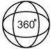

Overview
High Fidelity

High Diversity
Different eras of ages✓
Distinctive-Styles Materials ✓
Dynamic Motions ✓
Rich Annotations
*Cameras' Calibration* *Background Matting*
*SCAN* *2D-3D Key Points*
*FLAME Fitting* *Text Annotation*
Distinctive-Styles Materials ✓
Dynamic Motions ✓
Synthesizing high-fidelity head avatars is a central problem for many applications on AR, VR, and Metaverse. Compared to fast progress on the head avatar synthesizing algorithm, current public datasets can only support researchers to explore high-fidelity head avatars in one or two aspects, such as viewpoint, pose, hairstyle, or motion. Moreover, existing datasets usually contain portrait images with limited amounts and narrow distribution over different attributes, such as expressions and ages.
In this paper, we present RenderMe-360, a comprehensive 4D human head dataset to drive advance in head avatar algorithms across different scenarios. RenderMe-360 contains over 243 million complete head frames, diverse appearances, and over 80 million video sequences from 500 different identities captured by 60 synchronized HD cameras at 30 fps.
What makes RenderMe-360 different?
{kind=link}
ID
Views
Expressions
Sentences
Wigs
Frames
Scales
- RenderMe-360 is a large scale dataset with 500 IDs and 243M frames in total, far exceeds other datasets.
- A wide diversity including era, ethnicity, accessory and makeup.
- Each subject capture about 20-30 performance parts in cluding expression, hair, and speech
Realism
- Build a multi-video camera capture cylinder called POLICY to capture synchronized multi-view videos
- 60 instructive cameras / 2448 × 2048 / 30FPS for video capture
Granularity
Rich and multimodal annotation far beyond other datasets
- face landmark 2d & 3d
- front-back matting
- FLAME parameters
- scan mesh
- uv map
- Action Units
- appearance annotation
- text description
Statistics
Identity Statistic
{kind=link}
- Ages between 5 and 80. Teenagers and adults form the major part.
- Height-weight distribution map. It indicates a large part of the models is located in height between 155cm and 185cm, and weight between 50kg and 90kg.
- Gender-balanced with 4 ethnicities (217 Asian, 140 White, 88 Black, and 55 Brown)
Annotation Statistic
{kind=link}
We obtain a dataset with more than 243M frames which are fine-grained annotated.
- RenderMe-360: Expression-Part, Wig-Part, and Speech-Part
- 71M frames with 2D landmarks and matting
- 4.8M frames with 3D landmarks
- 0.6M FLAME Fitting
Camera View Distribution
{kind=link}
- Our capture system has 60 cameras which forms 3 and a half circles.
- The cameras are split into two parts with an angle divider from 90 degree to 270 degree
- The frontal views take up 65%.
Accessory Statistic
- Parts of Asians (more than 40%) are captured with special clothing and head accessories
- Distributions of head accessories are only calculated among Asians
- More than 50% of subjects with accessories wear hats with or without a brim
- Less than 10% of subjects choose headband or head veil.
Hair Style
{kind=link}
- 7 styles for wigs, 2 with men’s style, and 5 with women’s style
- We randomly sampled 8 to 12 wigs for captured subjects, wig styles are not specified for gender.
- Six colors are not evenly distributed among each wig.
- subjects captured with black and brown are the majority
- yellow color has the least portion
Word Frequency Chinese
{kind=link}
We calculated word frequency for Chinese. From the cloud visualization, word frequency is indicated by the size of each character. The most frequent word ``Hai Pa'' in Chinese appears nearly 450 times among all sentences, while the least frequent one ``Ji Jiu'' is less than 50. We only summarize the phrased in Chinese, but not single characters like ``de'', ``shi'', ``wo'' and etc., since there have not specific implications.
Word Frequency English
{kind=link}
We calculated word frequency for English. The most frequent word, ``Drawing'', occurs more than 600 times, while the least frequent one ``Ambitious'' is close to 0.
@inproceedings{2023renderme360,
title={RenderMe-360: Large Digital Asset Library and Benchmark Towards High-fidelity Head Avatars"},
author={Pan, Dongwei and Zhuo, Long and Piao, Jingtan and Luo, Huiwen and Cheng, Wei and Wang, Yuxin and Fan, Siming and Liu, Shengqi and Yang, Lei and Dai, Bo and Liu, Ziwei and Loy, Chen Change and Qian, Chen and Wu, Wayne and Lin, Dahua and Lin, Kwan-Yee},
booktitle={Thirty-seventh Conference on Neural Information Processing Systems Datasets and Benchmarks Track},
year = {2023}